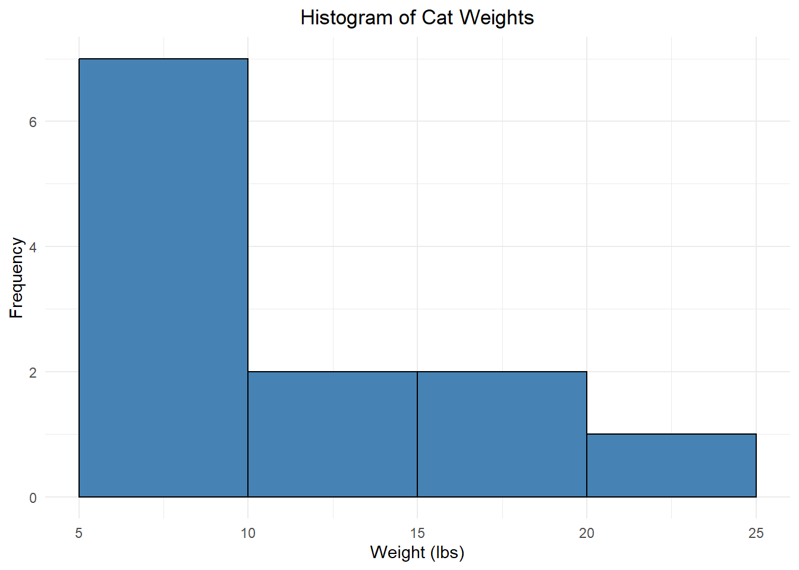
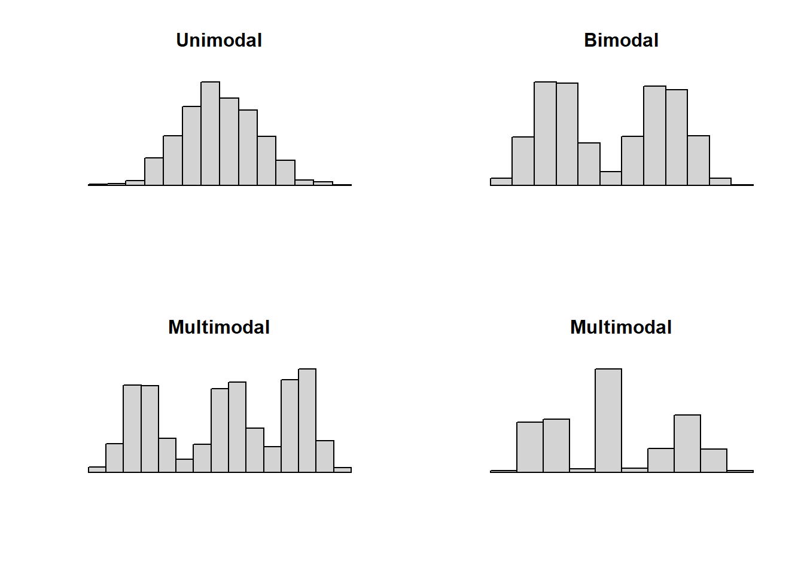
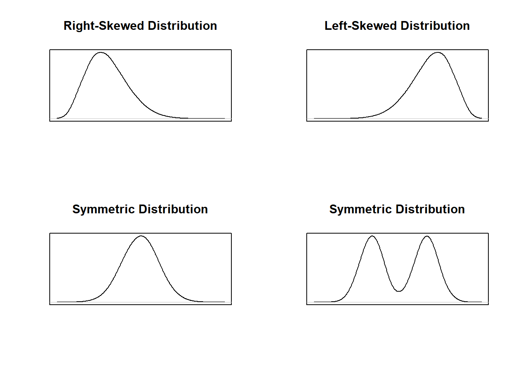

Module 1 Introduction to Data
What is statistics? There are two ways to think about this:
- Facts and data, organized or summarized in such a way that they provide useful information about something.
- The science of analyzing, organizing, and summarizing data.
As a field, Statistics provides tools for scientists, practitioners, and laypeople to better understand data. You may find yourself using knowledge from this course in a research lab, while reading a research report, or even while watching the news!
Module Learning Objectives/Outcomes
After completing Module 1, you will be able to:
- Understand basic statistical terminology.
- Describe sampling and experimental design techniques.
- Organize and visualize data using techniques for exploratory data analysis.
- Identify the shape of a data set.
- Understand and interpret graphical displays.
R objectives
- Manually enter data.
- Generate random numbers.
- Create histograms.
This module’s outcomes correspond to course outcomes (1) organize, summarize, and interpret data in tabular, graphical, and pictorial formats and (2) organize and interpret bivariate data and learn simple linear regression and correlation.
1.1 Statistics Terminology
There are two ways to think about statistics:
- Descriptive statistics are methods for describing information.
For example, 66% of eligible voters voted in the 2020 presidential election (the highest turnout since 1900!).
- Inferential statistics are methods for drawing inference (making decisions about something we are uncertain about).
For example, a poll suggests that 75% of voters will select Candidate A. People haven’t voted yet, so we don’t know what will happen, but we could reasonably conclude that Candidate A will win the election.
The first three modules of this text are dedicated to methods for descriptive statistics. Modules 4 and 5 build up some background information to help with inferential statistics, and then Modules 6 and beyond deal with inferential statistics.
Data is factual information. We collect data from a population, the collection of all individuals or items a researcher is interested in.
- Collecting data from an entire population is called a census.
- This is complicated and expensive! There’s a reason the United States only does a census every 10 years.
- We can also take a sample, a subset of the population we get data from.
- If you think of the population as a pie, the sample is a small slice. Whether it’s a pumpkin pie, a cherry pie, or a savory pie, the small slice will tell you that. We don’t need to eat the entire pie to learn a lot about it!
Data are often organized in what we call a data matrix. If you’ve ever seen data in a spreadsheet, that’s a data matrix!
| Age | Gender | Smoker | Marital Status | |
| Person 1 | 45 | Male | yes | married |
| Person 2 | 23 | Female | no | single |
| Person 3 | 36 | Other | no | married |
| Person 4 | 29 | Female | no | single |
Each row (horizontal) represents one observation (also called observational units, cases, or subjects). These are the individuals or items in the sample.
Each column (vertical) represents a variable, the characteristic or thing being measured. Think of variables as measurements that can vary from one observation to the next.
There are two broad types of variable, each of which can be further categorized into two sub-types:
- Numeric or quantitative variables take numeric values AND it is sensible to do math with those values.
- Discrete numeric variables take numeric values with jumps. Typically, this means they can only take whole number values. These are often counts of something. For example, the number of pets you have, the number of cars that drive through an intersection during rush hour, or the number of classes students are taking.
- Continuous numeric variables take values “between the jumps”. Typically, this means they can take decimal values. For example, weights of guinea pigs, milliliters of medication administered, or any measurements of time.
- Categorical or qualitative variables take values that are categories. These could be something like gender, ice cream flavors, or dog breeds.
- Ordinal categorical variables have categories with some kind of intrinsic ordering, meaning we can rank them in a meaningful way. For example, a survey asking for approval levels might have categories “strongly disapprove, disapprove, neutral, approve, strongly approve”; and letter grades have the standard ordering “A, B, C, D, F”.
- Nominal categorical variables have categories with no intrinsic ordering. Examples include eye color, college major, and the city people live in.
- Sometimes, categories can be represented by numbers. Ask yourself if it makes sense to do math with those numbers. If it doesn’t make sense, it’s probably a categorical variable. Some examples: zip codes, phone area codes, or student ID numbers.
- If you’re unsure whether a variable is discrete or continuous, pick a number with some decimal places and ask yourself if that value makes sense. If it doesn’t, it’s probably discrete. For example, number of siblings is discrete (you can’t have 2.3 siblings), but age is continuous (a number like 21.3 may not be how we usually share our age, but it is meaningful).
Section Exercises
For exercises 1-10, determine whether the variable is discrete numeric, continuous numeric, ordinal categorical, or nominal categorical.
- species
- temperature in Celsius
- level of education
- blood type
- grams of flour in a cake recipe
- political party
- level to which a person agrees with some statement
- number of siblings
- number of cars that cross a bridge during rush hour
- heart rate (beats per minute)
For exercises 11-16, refer to the following table showing part of the data matrix from an Intro Stats course survey. Note that some rows have been removed.
| Age | Year in college | What is your major? | Units this semester | |
| 1 | 19 | Sophomore | Health Sciences | 15 |
| 2 | 19 | Sophomore | Business | 15 |
| 3 | 19 | Sophomore | Undecided | 14 |
| \(\vdots\) | \(\vdots\) | \(\vdots\) | \(\vdots\) | \(\vdots\) |
| 29 | 21 | Junior | Business | 15 |
- What does each row of the data matrix represent?
- What does each column of the data matrix represent?
- How many observations are there in the full dataset?
- What are the three other terms that mean the same thing as “observation”?
- How many variables are there?
- Indicate whether each variable in the data matrix is discrete numeric, continuous numeric, ordinal categorical, or nominal categorical.
For exercises 17-21, identify the population and the sample.
- A survey of 2084 US households found that 45% have multiple TVs.
- A local university wants to impose a new student fee in order to offer a better student rec center. They ask 87 students whether they support this fee.
- A medical research company wants to test how well their new prosthetic hand design works for amputees. They recruit 27 amputees and have them wear the hands for a week, tracking their comfort and how well the hands respond to different cues.
- A scientist wants to track the life cycles of invasive Burmese pythons in Florida. She spends a month in the field and tags 52 pythons for monitoring.
- A college student wants to know if people living in her dorm actually enjoy the food offered at the dorm’s food court. He approaches 18 students during meals at the food court and asks about their opinions.
- In your own words, explain the differences between a population, a sample, and an observation.
- Dig Deeper Read the article, Here’s Why an Accurate Census Count Is So Important from the New York Times. (If you can’t access the article, try a Google search for “why an accurate census count is important”.) Take a moment to write down your thoughts on the relationship between how we collect data (for example - the questions asked in the census) and the power data has over people’s lives. As researchers, scientists, and consumers of media, what are some reasons this is important to think about?
1.2 Statistical Sampling
How do we get samples? We want a sample that represents our population. Representative samples reflect the relevant characteristics of our population.
In general, we get representative samples by selecting our samples at random and with an adequate sample size.
A non-representative sample is said to be biased. For example, if we used a sample of chihuahuas to represent all dogs, we probably wouldn’t get very good information; that sample would be biased.
These can be a result of convenience sampling, choosing a sample based on ease.
In our daily lives, common sources of bias are anecdotal evidence and availability bias. Anecdotal evidence is data based on personal experience or observation. Typically this consists of only one or two observations and is NOT representative of the population. For example, suppose a friend tells you their grandpa smoked a pack of cigarettes a day and lived to be 100. That may be entirely true, but it does not negate the fact that smoking is bad for your health.
Availability bias is your brain’s tendency to think that examples of things that come readily to mind are more representative than is actually the case. For example, shark attacks are actually extremely uncommon, but the media tends to report on extreme anecdotes, making us more prone to this kind of bias! Anecdotal evidence is more directly connected to data, but both are important to be mindful of as responsible consumers of information.
1.2.1 Sampling Types
Simple Random Sampling
We avoid bias by taking random samples. One type of random sample is a simple random sample. We can think of this as “raffle sampling”, like drawing names out of a hat. Each case (or each possible sample) has an equal chance of being selected. Knowing that A is selected doesn’t tell us anything about whether B is selected. Instead of literally drawing from a hat, we usually use a random number generator from a computer.
Stratified Sampling
In a stratified sample, we break the population down into groups called strata based on characteristics we think might be relevant to our study. Individuals or items within a strata should be fairly similar to each other with respect to the outcome of interest. We then take a random sample from each strata. This ensures we have representation from each group.
Example: A local politician believes men and women will vote differently on an upcoming ballot measure. She goes into the community and randomly samples 50 men and 50 women to ask for their thoughts on the ballot measure.
We can also use stratified sampling to make sure that the proportion of items in each group in the population matches the proportions in our sample.
Example: A local high school is 29% freshmen, 27% sophomores, 24% juniors and 19% seniors. They want to collect a sample of 100 students using class level as strata. Since some class levels have more students than others, they set their strata to match: they select 29 freshmen (29% of their sample), 27 sophomores, 24 juniors, and 19 seniors.
This approach to stratified sampling can also help us ensure that small strata are adequately represented in our study.
Example: Suppose we are doing some drug development research for a particular disease and know that a very small part of our population develops an especially severe form of the disease. In order to make sure those individuals are represented in our sample, we could treat disease severity as strata. The motivation in this case is that, in a simple random sample, we might miss those individuals entirely! By constructing these strata, we make sure they are accounted for.
Cluster Sampling
In a cluster sample, we break the population into clusters, where each cluster is similar to the population (and so the clusters are all similar to each other). We then take a random sample of clusters and measure all items or individuals within each of those randomly selected clusters.
Example: An airline wants to survey people who take its international flights from the United States to Asia. They randomly select 10 of these flights and give the survey to every individual on each of those 10 flights.
Example: A farmer wants to know something about the plants in their fields. They randomly select 5 of their fields and examine all of the plants in each field.
The potential downside to cluster sampling is that there may be factors that make clusters meaningfully different from one other.
Example: If our airline randomly samples flights to Asia, they may have failed to take into account that the people going to Vietnam are different from the people going to the Philippines who are different from the people going to India. That is, it’s probably not reasonable to assume that every flight to Asia is representative of the entire population of individuals who use that airline to fly to Asia.
Systematic Sampling
In a systematic sample, we choose some starting point in our population and then collect every \(k\)th observation.
Example: If I had a list of student ID numbers for every student at Sacramento State, I could generate a sample of students by selecting every 100th number.
Example: Suppose we want to examine some machine part coming off on an assembly line. We collect a sample by pulling every 20th part off of the assembly line for additional testing.
One potential issue with systematic sampling is that there may be some pattern in the data.
Example: A machine on an assembly line is oiled after producing 20 components, and its performance degrades steadily after it is oiled. If we select every 20 components, we match this periodicity and fail to capture a representative sample of components.
Section Exercises
For exercises 1-5, determine whether the sample is likely to be biased. Explain your thought process.
- A professor wants to learn something about Sacramento State students, so they take a sample of all of their Stat 1 students.
- A psychologist wants to draw conclusions about adults, and they run their study on a sample of randomly selected college students.
- A pollster wants to draw conclusions about how people in California will vote on an upcoming ballot measure, so they select a random sample of 1000 likely voters in California.
- Your roommate wants to know how many energy drinks other college students drink, so he asks all of his buddies to spend a week keeping track of how many energy drinks they consume.
- A researcher wants to know how well some new medical intervention works, so they find volunteers willing to come into their clinic and participate in their study.
Exercises 6-11 each describe a statistical sampling scenario. Determine the statistical sampling type.
- A spa wants to know how customers like their treatments, so they ask every tenth customer to fill out a satisfaction survey.
- A landscaping company wants to know which suburbs they should advertise their services to. They get a list of all the suburbs in their area and randomly sample 10 households from each suburb to ask about their landscaping needs.
- A city council wants to know whether its residents support building a new sports stadium. They get a list of all residents in the city and randomly call 200 of them.
- A farmer wants to know which varieties of beans will yield the most product. She randomly selects five of her fields and examines the total bean yields for each of those five fields.
- A researcher wants to know if a new medical intervention will help reduce the higher anesthetic requirement for redheads. His company has clinics in a number of US cities, so he randomly selects five of those clinics. Each clinic then asks all of their patients if they are willing to participate in the study.
- To conduct an exit poll for voters at a specific voting location, a pollster stands outside the voting location and interviews every fifth person who exits the building.
For exercises 12-16, come up with a research scenario for the listed sampling type.
- simple random sampling
- stratified sampling
- cluster sampling
- systematic sampling
1.3 Experimental Design
When we do research, we have two options: run an experiment or an observational study.
1.3.1 Experiments
In an experiment, researchers assign treatments (experimental conditions) to cases.
Example A biologist wants to know if different diets impact reproductive behaviors in mice. Of the 50 mice they have in the lab, 17 will be given Diet A, 17 will be given Diet B, and 16 Diet C. The biologist is going to provide each mouse with a specific diet, so this is an experiment. That is, they are assigning treatments (diets) to cases (mice).
Example A medical researcher wants to know if a new heartburn medication is as effective as antacids. They bring 150 people into the lab and have them drink something that causes heartburn. After a set period of time, 75 of them are given an antacid and 75 are given the new heartburn medication. The researchers then measure how long it takes for each person’s heartburn to subside. This is an experiment because the researchers provided each person with a treatment - an antacid or the new medication. That is, the researchers assigned a treatment to each subject.
In an experiment, cases may also be called experimental units (items or individuals on which the experiment is performed).
1.3.2 Observational Studies
In an observational study, no conditions are assigned. These are often done for ethical reasons, like examining the impacts of smoking cigarettes.
Example A psychology researcher asked 100 people to take a survey on a variety of personality traits. Because the researcher did not assign any treatments to the subjects in the study (everyone took the same survey), this is an observational study.
Example A researcher wanted to examine the relationship between cigarette smoking and stomach cancer. They follow 65 people from ages 40-70 and compare the stomach cancer rates of smokers and non-smokers. This is an observational study because the researcher did not assign treatments to cases. That is, each subject in the study was free to choose whether to smoke cigarettes. (If the reseachers found a strong relationship between smoking and stomach cancer, they would not be able to say that smoking causes stomach cancer, but they would have strong motivation for futher research!)
Importantly, experiments allow us to infer causation. Observational studies do not.
1.3.3 Experimental Design Principles
We have some additional things to think about for experiments, starting with our experimental design principles:
Control: two or more treatments are compared. We want to compare multiple treatments because it helps us be confident that our treatments are causing the effect we are observing. For example, if we wanted to know whether ibuprofen reduces pain from headaches, we would want to compare the use of ibuprofen to, for example, not taking any painkiller. This comparison allows us to confirm that any reduction in pain happened because of the ibuprofen, rather than the pain reduction being something that would have happened over time even without the drug.
Randomization: experimental units are assigned to treatment groups, usually and preferably at random. Essentially, we want each treatment group to look like a mini random sample and, just like with samples, that random assignment helps ensure that each group is representative of the population.
Replication: a large enough sample size is used to test each treatment many times (on many different experimental units). Perhaps the best way to think about why this is important is to think of the scenario where there is only one case in each treatment group. With such a small number in each group, we would have no way of knowing if the treatment is causing some effect or if any changes are happening by random chance. By selecting a larger sample size, we essentially “average out” the things that happen at random so that we can focus on the treatments themselves.
Blocking: if variables other than treatment are likely to have an impact on study outcome, we use blocks. Blocks give us a little bit of additional control over making sure that each treatment is representative of our population. For example, I might separate patients in a medical study into “high risk” and “low risk” blocks. I would randomly assign all of the high risk patients to a treatment and then randomly assign all of the low risk patients to a treatment. This helps ensure an even distribution of high/low risk patients in each treatment group.
An experiment without blocking has a completely randomized design; an experiment with blocking has a randomized block design.
In an experimental setting, we talk about
- Response variable: the characteristic of the experimental outcome being measured or observed.
- Factor: a variable whose impact on the response variable is of interest in the experiment.
- Levels: the possible values of a factor.
- Treatments: experimental conditions (based on combinations of factor levels).
Example: Some entomologists are interested in the number of eggs laid by carrion beetles at different temperatures and different levels of moisture in the environment. They set up various enclosures for the beetles with temperatures either above or below freezing; and humidity levels of 10%, 50%, and 80%. After 24 hours in an enclosure, they check how many eggs were laid by each beetle.
In this scenario, the entomologists are interested in observing how different things impact number of eggs laid, so this is the response variable. The factors are temperature and humidity, the two variables our researchers think will impact that response variable. For humidity, the levels are 20%, 50%, and 80%; for temperature, the levels are “below freezing” and “above freezing”.
To get at the treatments, we need to consider all possible combinations of factor levels. That is, we need to think about all of the possible ways to combine the different temperatures and humidities:
- 20% humidity, below freezing.
- 50% humidity, below freezing.
- 80% humidity, below freezing.
- 20% humidity, above freezing.
- 50% humidity, above freezing.
- 80% humidity, above freezing.
There are six different combinations, which make up the six different treatments in this experiment.
In human subjects research, we do a little extra work. If subjects do not know what treatment group they are in, the study is called blind. We use a placebo (fake treatment) to achieve this. We do this because, psychologically, people’s expectations for their outcome (their idea of what is going to happen to them) has a strong impact on how they actually do. This is called the placebo effect. If neither the subjects nor the researchers who interact with them know the treatment group, it is called double blind. This helps avoid bias caused by researcher’s expectations for outcome. This can happen when, for example, a person does not know what treatment group they are in, but a doctor knows they are getting a fake treatment and acts as if they may have a bad outcome.
Section Exercises
- A group of researchers wanted to know if puppies have an effect on heart rate. From a sample of 18 people, they randomly assigned 10 to take a test while in a room with a puppy. The remaining 8 people took the same test in a room with no puppies. During the test, each participant’s heart rate was monitored.
- Is this an observational study or an experiment? Explain.
- Identify the (i) cases and (ii) response variable.
- Explain how this study satisfies the principles of (i) control, (ii) randomization, and (iii) replication.
- Can this study be used to infer causality (cause and effect)? Why or why not?
-
A group of researchers wanted to examine the relationship between smoking and type 2 diabetes. In a sample of 200 people, 47 were smokers and 153 were non-smokers. The researchers followed both groups for 10 years and tracked whether they developed diabetes.
- Is this an observational study or an experiment? Explain.
- Can this study be used to infer causality? Why or why not?
- A scientist wanted to examine how different conditions impacted the life cycle of monarch butterflies. Butterfly cocoons were placed individually into enclosures at three different temperatures: 70 degrees, 90 degrees, and 110 degrees; and two different levels of humidity: high (85%) and low (15%). The scientist then measured how long each cocoon took to develop into a butterfly.
- Is this an observational study or an experiment? Explain.
- Identify the (i) cases and (ii) response variable.
- Identify the factors. What are the levels of each factor?
- What are the possible treatments in this experiment? (Hint: there should be 6 combinations of factor levels.)
- Explain how this study satisfies the principles of (i) control, (ii) randomization, and (iii) replication.
- Can this study be used to infer causality? Why or why not?
- A drug manufacturer wants to know how well a new blood pressure medication works. They recruit 130 people with high blood pressure and randomly assign 65 of them to the new medication; the other 65 will receive an existing blood pressure medication that is known to work well. Researchers will then monitor each participant’s blood pressure over time to determine whether the new medication works at least as well as existing medications.
<ol style="list-style-type: lower-alpha;">
<li>Is this an observational study or an experiment? Explain.</li>
<li>Identify the (i) cases and (ii) response variable.</li>
<li> Explain how this study satisfies the principles of (i) control, (ii) randomization, and (iii) replication. </li>
<li> What would need to be true for this study to be *blind*? </li>
<li> What would need to be true for this study to be *double blind*? </li>
<li> Why do you think the researchers chose not to use a placebo in this study? </li>1.4 Frequency Distributions
1.4.1 Qualitative Variables
Frequency (count): the number of times a particular value occurs. Suppose we have the following data for the class level of students in a section of Introductory Statistics:
sophomore, freshman, freshman, sophomore, sophomore, senior, sophomore, freshman, senior, sophomore, freshman, junior, freshman, freshman, senior, sophomore, sophomore, freshman, sophomore, junior, freshman, sophomore, junior, freshman, senior, freshman, freshman, senior, freshman, sophomore
This is a lot to take in at a glance, so we are going to think about ways to summarize it. A frequency distribution lists each distinct value with its frequency.
| Class | Frequency |
|---|---|
| freshman | 12 |
| sophomore | 10 |
| junior | 3 |
| senior | 5 |
Note that I can also quickly get the total number of students in the class from this frequency distribution; since all students are accounted for in the data, the total number of students is \(12 + 10 + 3 + 5 = 30\).
A bar plot is a graphical representation of a frequency distribution. Each bar’s height is based on the frequency of the corresponding category.
The bar plot above shows the class level breakdown for students in an Introductory Statistics course. Take a moment to notice how the bars match up with the frequency distribution above. Since class level is an ordinal variable, we should match the order of the bars to the order of the categories.
For nominal variables, we can use a Pareto chart, which is a bar chart with the bars sorted from highest to lowest frequency.
This allows us to quickly examine which categories appear most and least frequently, as well as how their frequencies compare to each other.
Relative frequency is the ratio of the frequency to the total number of observations.
\[ \text{relative frequency} = \frac{\text{frequency}}{\text{number of observations}} \]
This is also called the proportion. The percentage can be obtained by multiplying the proportion by 100.
A relative frequency distribution lists each distinct value with its relative frequency.
| Class | Frequency | Relative Frequency | Percent |
|---|---|---|---|
| freshman | 12 | \(12/30 = 0.4\) | 40% |
| sophomore | 10 | \(10/30 \approx 0.3333\) | 33.33% |
| junior | 3 | \(3/30 = 0.1\) | 10% |
| senior | 5 | \(5/30 \approx 0.1667\) | 16.67% |
Notice that if we add up all of the relative frequencies, we get 1. Equivalently, if we add all of the percents, we get 100%. This total represents 100% of the students in this course.
1.4.2 Quantitative Variables
We can also apply this concept to numeric data. A dot plot is one graphical representation of this. A dot plot shows a number line with dots drawn above the line. Each dot represents a single point.
For example, the dot plot above shows a sample where the value 1 appears three times, the value 5 appears six times, etc.
We would also like to be able to visualize larger, more complex data sets. This is hard to do using a dot plot! Instead, we can do this using bins, which group numeric data into equal-width consecutive intervals.
Example: A random sample of weights (in lbs) from 12 cats:
\[\quad 6.2 \quad 11.6 \quad 7.2 \quad 17.1 \quad 15.1 \quad 8.4 \quad 7.7 \quad 13.9 \quad 21.0 \quad 5.5 \quad 9.1 \quad 7.3 \]
The minimum (smallest value) is 5.5 and the maximum (largest value) is 21. There are lots of ways to break these into “bins”, but what about…
- 5 - 10
- 10 - 15
- 15 - 20
- 20 - 25
Each bin has an equal width of 5, but if we had a cat with a weight of exactly 15 lbs, would we use the second or third bin?? It’s unclear. To make this clear, we need there to be no overlap. Instead, we could use:
Weight Count [5, 10) 7 [10, 15) 2 [15, 20) 2 [20, 25) 1 Now, a cat with a weight of 15.0 lbs would be placed in the third bin (but not the second). (Recall that the interval notation \([5, 10)\) means \(5 \le x < 10\).)
We will visualize this using a histogram, which is a lot like a bar plot but for numeric data:

This is what we call a frequency histogram because each bar height reflects the frequency of that bin. We can also create a relative frequency histogram which displays the relative frequency instead of the frequency:
Notice that these last two histograms look the same except for the numbers on the vertical axis! This gives us insight into the shape of the data distribution, literally how the values are distributed across the bins. The part of the distribution that “trails off” to one or both sides is called a tail of the distribution.
When a histogram trails off to one side, we say it is skewed (right-skewed if it trails off to the right, left-skewed if it trails off to the left). Data sets with roughly equal tails are symmetric.
We can also use a histogram to identify modes. For numeric data, especially continuous variables, we think of modes as prominent peaks.

- Unimodal: one prominent peak.
- Bimodal: two prominent peaks.
- Multimodal: three or more prominent peaks.
Finally, we can also “smooth out” these histograms and use a smooth curve to examine the shape of the distribution. Below are the smooth curve versions of the distributions shown in the four histograms used to demonstrate skew and symmetry.

Section Exercises
- Twenty-five Stat 1 students were asked how tall they were. A histogram of their responses is shown below. Describe the shape (modality and skew/symmetry) of this distribution.
- The following histogram shows the duration (in minutes) for 299 eruptions of Old Faithful Geyser in Yellowstone National Park. Describe the shape of this distribution
For exercises 3-5, twenty-one Stat 1 students were asked where they were from. A bar chart of their responses is shown below.

- How many people in this class are from the Bay Area?
- Use the bar plot to create the frequency distribution for these data.
- Use your frequency distribution from (a) to find the relative frequency distribution for these data.
brown, brown, blue, green, blue, brown, brown, grey, brown, blue,
brown, green, brown, blue, brown, brown, brown, blue, blue, brown
- Construct a frequency distribution for these data.
- Construct a relative frequency distribution.
- Create a Pareto chart for these data.
R Lab: Data Basics and Graphs
R as a Calculator
Let’s start simple. Type in 2+2 and click the “Run” button in the top left panel. The answer to \(2+2\) should appear in the bottom left panel under the line of code you just ran. It will look something like
> 2+2
[1] 4
Basically, using R as a calculator works the same way as the scientific calculator you may have used in math classes. That is, R follows the traditional order of operations. However, some of the operators may be a little different from what you’re used to.
- Addition and subtraction are as you would expect:
3+5will give the solution to \(3+5\) and6-4the solution to \(6-4\). - We use an asterisk for multiplication:
3*4will give the solution to \(3\times 4\). - For division, we use a forward slash:
6/2gives the solution to \(6 \div 2\). - Finally, for exponents, we use a caret:
7^3gives the solution to \(7^3\). - For the square root, we have a special command:
sqrt(9)gives the solution to \(\sqrt{9}\).
By default, R will always produce either the whole number result or a decimal. That’s what we want in this class!
Try entering each of the commands given above in R, pressing the green “Run” button after each one. Notice that you can either delete everything in the box and then do a new calculation, or you can put your new calculation on the next line:
Try copy and pasting the three lines above into the top left panel and then take a moment to notice what the output looks like and how it matches up with the lines of code you entered.
Your Turn
- For each of the following mathematical expressions, provide an R expression you could write to find the solution.
- \(7^{11}\)
- \(17\times9\)
- \(\sqrt{49}\)
We can also do much more extensive calculations in R, but we need to be very careful with our order of operations! If in doubt, break your equation up and do it piece by piece. For example, consider the expression \[\frac{7-4}{5/\sqrt{10}}\] I can put this entire thing into R as (7-4)/(5/sqrt(10)) but that requires a bunch of parenthesis to get the order of operations right!
Another option is to break this down. I start with 7-4 to get a value of 3 in the numerator. Then, I can find 5/sqrt(10) separately, which is 1.581. Finally, I would enter 3/1.581 to get my final answer of 1.897. (I would do the same thing with a scientific calculator if I weren’t 100% comfortable with my parentheses!)
Random Number Generation
To generate a random whole number using R, we can use the sample command. We use the sample command like sample(minimum:maximum, size = n), replacing minimum with the minimum value (often the number 1), maximum with the maximum value, and n with the sample size.
The following command takes a random sample of size 1 from the values 1 through 10 (the numbers 1, 2, 3, 4, 5, 6, 7, 8, 9, 10):
which results in the output
## [1] 1Entering Data
We can work with data in R by reading it in from a file or by entering it manually. To enter numeric data manually, we use the c command.
The following line of code saves the ages data from the data matrix example above:
Notice that we set ages equal to c() with the numbers in the parentheses, separated by commas. Also notice that the numbers are in the same order as in the data. If I want to use the ages variable later, I can refer to it directly in R and it will print out the values in that variable:
Your Turn
- Provide an R expression for entering the following data.
- The variable
petshas values \(1, 0, 2, 1, 1, 0, 2, 3, 4\). - The variable
heighthas values \(58.2, 69.1, 74.5, 66.0, 62.4, 64.8, 71.5\)
- The variable
- Provide an R expression for entering the following data. You will need to decide on appropriate variable names.
- The number of days per week students go to school resulted in the data \(3, 5, 4, 5, 5, 3, 3, 4\).
To enter categorical data in R, we do the same thing, but with the addition of quotation marks:
Notice that for every variable I entered data for in R, I gave it a single word name. That’s important! R will not recognize spaces. However, R does recognize upper versus lowercase letters! In R, age is different from Age.
Your Turn
- Provide an R expression for entering the following data.
- The variable
smokerhas values \(\text{yes, no, yes, yes, no}\).
- The variable
- Provide an R expression for entering the following data. You will need to decide on an appropriate variable name.
- The level of a sample of college students resulted in the data \(\text{freshman, freshman, sophomore, senior, freshman}\).
Usually may want to use data without entering it by hand in R. In this class, we will do this in two ways. The first is by using datasets that are built into R. One such dataset is called
To access and this data in R, we enter the following command:
The final way is what we use most often in practice. When we do data analysis in the real world, often our data is stored in an Excel, csv, or similar spreadsheet-type file. For this class, when we use external data, we will only use data stored in csv files. To read in a csv file, we use the command read.csv. For example
Reads in a file located on my computer. The stuff inside the quotation marks is a filepath, which tells R both which file I want (dataset.csv) and where the file is located (C:\Users\perry\Documents\Courses\STAT 1\). We can do something similar with csv files stored online, which is how we will use external datafiles in this course. Further, for this course, I will always provide you with the line of code you need to read in any external files.
Histograms
There is a built-in dataset in R called Loblolly, which contains the variables height and age of some Loblolly pine trees. I can refer to this data by typing in Loblolly directly. To view just the first few observations (out of the 84 total in the data), I can use the head command:
## height age
## 1 4.51 3
## 2 10.89 5
## 3 28.72 10
## 4 41.74 15
## 5 52.70 20
## 6 60.92 25The information that appears next to each ## is what R prints out for us.
In order to refer to the variables in Loblolly directly, I will need to use the attach command. This tells R that when I say age I mean the age variable from the Loblolly dataset (and not from some other dataset).
I want to create a histogram to visualize the ratio of tree height to age. First, I need to find this ratio for each observation. I can do this easily in R by dividing height by age. I will save this as a new variable called htage_ratio.
Then to create a histogram of the height to age ratio, we will use the command hist on the variable htage_ratio:

I can clean up this graph by taking advantage of additional arguments in the hist command:
mainis where I can give the plot a new title. (Make sure to put the title in quotes!)xlabis the x-axis (horizontal axis) title.ylabis the y-axis (vertical axis) title.freqallows us to create either frequency or relative frequency histograms.- If we set it equal to
TRUEit will produce a frequency histogram. (This is the default if we don’t give R any instructions.) - If we set it equal to
FALSEit will produce a relative frequency histogram.
- If we set it equal to
colallows us to give R a specific color for the bars.
Notice that each argument is separated by a comma.
hist(htage_ratio,
main = "Histogram of Height-to-Age Ratio",
xlab = "Height-to-Age Ratio (feet/year)",
ylab = "Relative Frequency",
freq = FALSE,
col = 'pink')When I am done, I will use the detatch command to tell R that I am not working with the Loblolly data anymore.
Your Turn
- Provide an R expression to create a histogram of the
heightvariable in theLoblollypine tree data. Copy and paste this histogram into your lab solutions. - Provide an R expression to create a histogram of the
agevariable in theLoblollypine tree data. Give your histogram an appropriate main title and vertical axis title, and choose a color for the bars. Copy and paste this histogram into your lab solutions.
Bar Plots
To create a bar plot, we will begin by asking R to generate a frequency table. We do this using the table command. By default, this command shows the categories in alphabetical order. That is fine.
Earlier, we created this gender variable. Let’s use it to create a frequency table:
## gender
## Female Male Other
## 2 1 1To make a bar plot, we need to put that table command into the barplot command. Here’s what that looks like:
To do this with a different variable, I would change out gender for the other variable. Everything else stays the same!
The customization for the bar plot is essentially the same as for histograms: